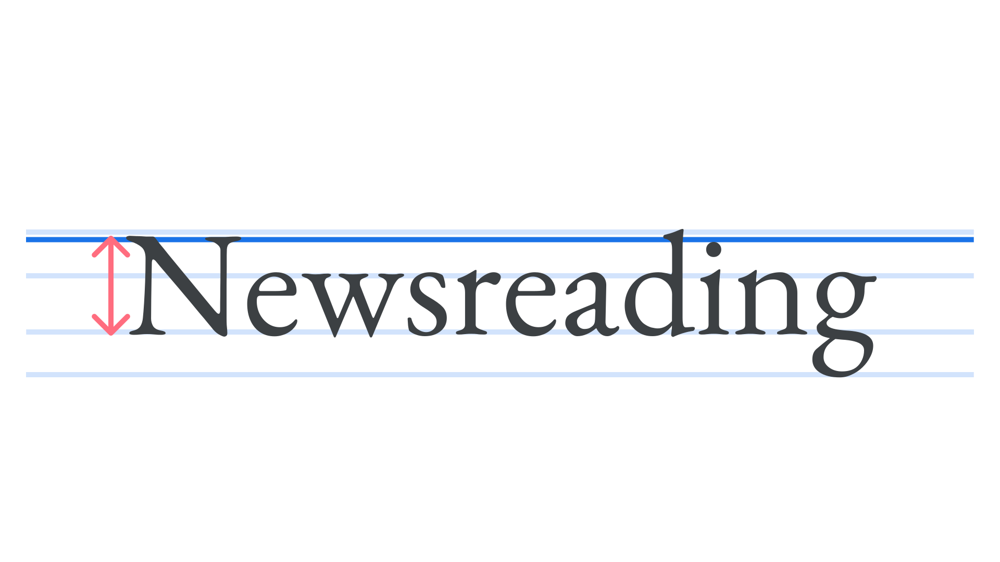

Cap height
By Google Fonts Knowledge contributors · Google Fonts Knowledge.
Original article · Source on GitHub · CC BY-SA 4.0. Text, illustrations and existing credits reproduced from the licensed Knowledge repository. Open Shelf adapted the layout and links; these adaptations are also CC BY-SA 4.0. No endorsement implied.
Cap height is the height of a typeface’s uppercase letters, measured from the baseline to the top of flat-topped glyphs. This is usually slightly lower than the ascender height, and cap height can vary between typefaces.

Note that due to optical illusion, round and pointed capitals (for instance the O and A) will extend a little above the cap height to make them appear as tall as the flat-topped capitals.